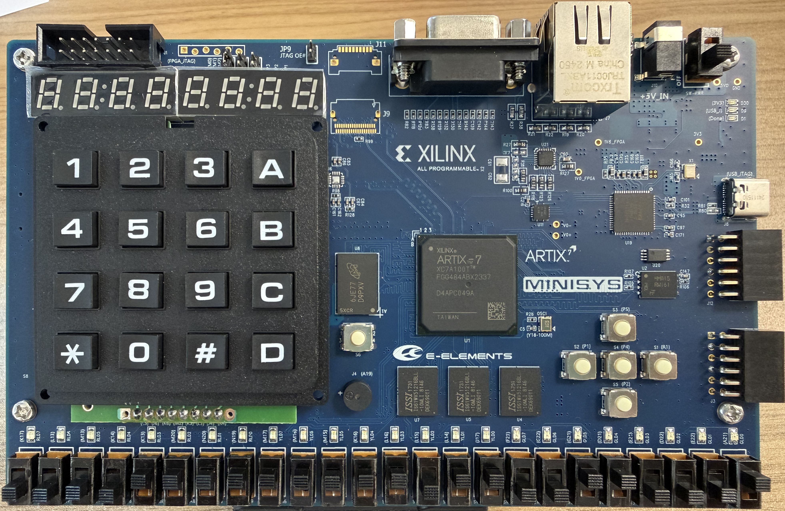
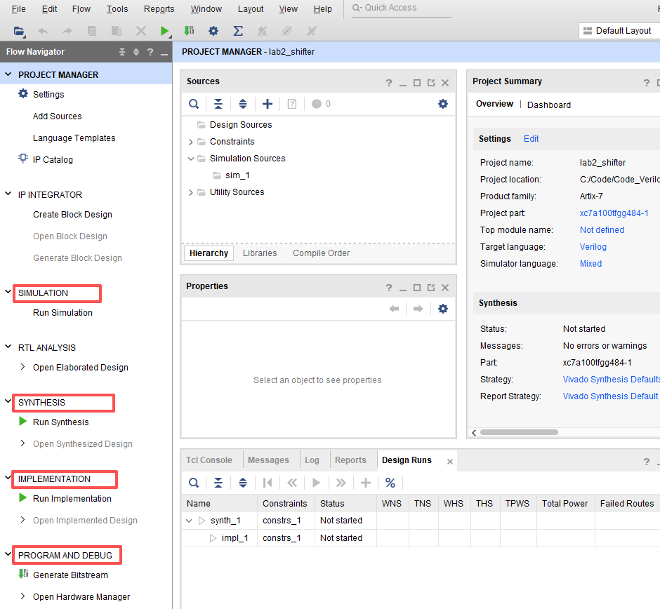
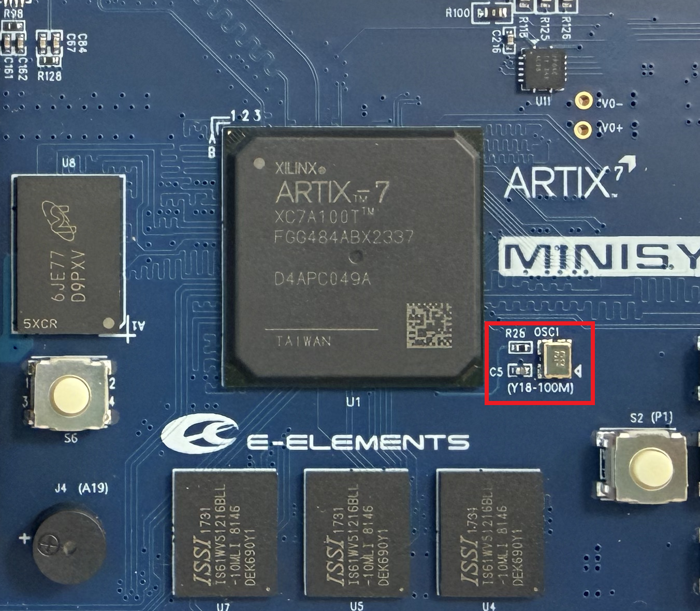
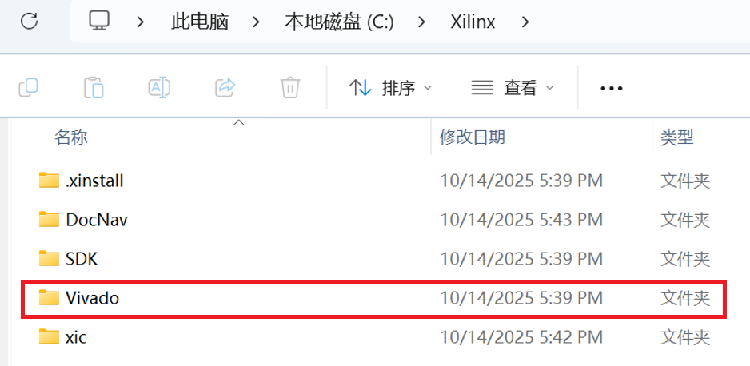
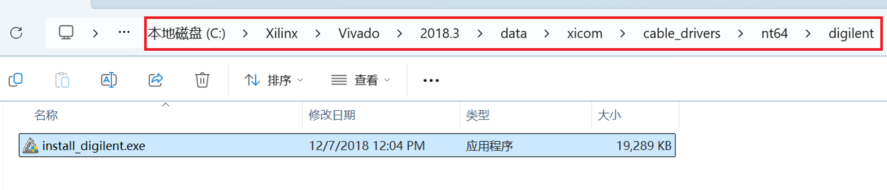

实验二 移位器设计与 FPGA 实现
本实验中，我们将设计一个由时钟信号控制的移位器，并经过仿真、综合、实现，最终在FPGA开发板上运行。
1. 实验准备
认识 FPGA
上一次实验我们体验了设计与仿真的流程，那么通过了功能仿真的电路设计要怎样以“硬件”电路的形式呈现呢？
一种途径是专用集成电路 (ASIC, Application-Specific Integrated Circuit)，即将电路以版图的形式交付给晶圆厂进行生产。
另一种途径是利用可编程逻辑器件 (PLD, Programmable Logic Device) 实现，允许用户对硬件连线进行编程达到预期功能。FPGA (Field-Programmable Gate Array，现场可编程逻辑门阵列) 就是一种比较常用的可编程逻辑硬件实现方式。
回忆一下理论课堂上的内容，由香农展开定理得知，任一逻辑函数都可以由多重 多路选择器 实现。这使得 查找表 (LUT, Look-Up Table) 结构可以作为一个通用的待编程的逻辑模块。
下图所示的简易 LUT 可以实现任意一个 2 输入、1 输出的逻辑功能，只需要在多路选择器的输入端配置相应的信号就可以。例如实现 y = a ^ b 的异或逻辑，4 个输入端从上至下分别配置为 0、1、1、0 即可。类似地，实现 y = (a & b) | c 的逻辑功能可以通过配置一个 3 输入 LUT 的输入端实现，这些配置信息将被保存起来。

本课程实验用的是 Xilinx 的 FPGA 芯片及其开发板， 点击下载手册 。主芯片为 xc7a100tfgg484 ，LUT 一般设计为 6 输入，即需要 64bit 的存储器来存储 6 个变量所有的可能组合，这个查找表也可以作为两个 5 输入的查找表或拆分成更小的查找表来使用，因此这些 6 输入查找表 (LUT6) 可以完成复杂的逻辑功能。

芯片中一个真实的可配置逻辑块 (CLB) 的结构。一个 CLB 中又包含两种SLICE ：SLICEL 和 SLICEM 。这两种 SLICE 只有 LUT 部分不一样，其余部分一样。SLICEL 的 LUT 主要用于 Logic 实现；而 SLICEM 的 LUT 还可以用于 Memory 结构，例如分布式 RAM 或者移位寄存器等。除了 LUT 之外，一个 CLB 中还包括其他专用电路部分，例如多路选通器、加法器以及寄存器。

电路的 FPGA 实现流程
Vivado 软件为逻辑电路设计提供了从代码到最终 CLB 实现的整套流程的自动化工具，大致分为仿真 -> 综合 -> 实现 -> 编程 几个步骤。
综合 (Synthesis) ：把 HDL 代码映射为逻辑结构的过程，Vivado 综合器将可综合的语法转换为 LUT、多路选通器、加法器、寄存器、存储器等 FPGA 内部的基本电路。
实现 (Implementation) ：根据综合的结果，进行布局布线，决定到底把逻辑电路放到 FPGA 芯片的哪个位置。
编程 (Program) ：将布局布线的结果生成 bitstream 文件，并使用这个文件对 FPGA 中的 LUT 和互联开关等进行实际的改写。编程完成后，便实现了逻辑的“硬件”化。

2. 实验内容
移位器设计与仿真
对于一个多位二进制数，我们可以将其向左或向右移动若干位，移位方式主要有：
左移 (Shift Left)：将二进制数的每一位向左移动，右侧补零。左移相当于乘以2的幂。
逻辑右移 (Logical Shift Right)：将二进制数的每一位向右移动，左侧补零。逻辑右移相当于除以2的幂。
算术右移 (Arithmetic Shift Right)：将有符号二进制数的每一位向右移动，左侧补符号位（最高位），保持数值的符号不变。
必做内容1：移位器设计
设计一个16位移位器，能够根据输入的操作码（op）选择不同的移位方式，将输入数据（data）在每个时钟周期内移动一位，直到达到指定的移位量（shamt），最终在输出端（out）得到结果。
另外，我们还需要一个开始 start 信号，在开始信号被置位后，输入的 op、data、shamt 信号将被寄存起来，不再受到输入端变化的影响，移位器开始进行移位。下一次 start 被置位时，这些信号将被重新寄存，进行新一轮的移位。
移位器代码框架1module shifter ( 2 clk 3 ,start 4 ,data 5 ,shamt 6 ,op 7 ,out 8); 9 10 input clk, start, data, shamt, op; 11 output out; 12 13 // clk freq is 100Mhz 14 wire clk, start; 15 wire [15:0] data, out; 16 wire [3:0] shamt; 17 wire [1:0] op; 18 19 // Your codes should start from here. 20 // ...... 21 // End of your codes. 22 23endmodule
必做内容2：移位器仿真
编写 testbench 来验证移位器模块的功能。三种移位方式、不同移位量、start信号功能，都需要测试。
测试代码示例如下：
1`timescale 1ns/1ps
2module tb_shifter;
3
4reg clk, start;
5
6// Your codes should start from here.
7// ......
8// End of your codes.
9
10initial begin
11 clk <= 1'b0;
12 start <= 1'b1; // start active
13 rgba(58, 40, 40, 0)
14 start <= 1'b0;
15end
16
17// clk freq is 100Mhz
18always #5 clk <= ~clk;
19
20endmodule
适应于 FPGA 实现的移位器设计修改
仿真通过的代码还不能直接移植到 FPGA 芯片中，还需要考虑两个重要的问题：一是代码中的信号和板载模块的对应，二是时钟 clock 信号的匹配。需要针对这两个问题对代码进行补充和修改。
修改1：代码中的信号和板载模块的对应
FPGA 开发板上提供了各类信号输入和输出的模块，在本实验中我们将使用板载的按键、拨码开关和 7 段数码管来实现移位器的输入输出功能。

具体的映射关系如下：
按键 S6 ：作为 start 信号的输入。
拨码开关 SW[15:0] ：作为数据 data 的二进制输入，每一个开关代表一个二进制位。
拨码开关 SW[19:16] ：作为位移量 shamt 的输入。
拨码开关 SW[21:20] ：作为位移方式 op 的输入。
7 段数码管 ：作为 out 的输出，每个数码管可以表示一个十六进制数，即 4bit 二进制数。
按键与代码模块中信号的对应关系、拨码开关与代码模块中信号的对应关系，都比较直接，将在后续 implementation 阶段 约束文件 中体现。
而 out 信号和 7 段数码管的显示则需要通过一个控制电路来实现，因此在 verilog 编码阶段就必须完成。我们提供了 7 段数码管显示十六进制数的代码 seg.v (点击下载) 和数码管的驱动程序 seg_driver.v (点击下载) 。请将这两个 .v 文件加到你的 project 中，并按下列代码示例的结构，在 top module 中将你设计的 shifter_16bit module 和 seg_driver module 都进行实例化，并将移位器的输出 out 连接到 seg_driver 模块的 data 端口。
1 module top (
2 ... // complete port definition
3 );
4
5 ... // complete variable definition
6
7 shifter_16bit u_shifter_16bit(
8 .clk (clk)
9 ,.start (start)
10 ,.data (data)
11 ,.shamt (shamt)
12 ,.op (op)
13 ,.out (out)
14 );
15
16 seg_driver u_seg_driver(
17 .clk (clk)
18 ,.data ({16'd0, out}) // connect shifter output to seg_driver data port, with 16 bits of zero padding to match the 32-bit width
19 ,.reset (start)
20 ,.code (code)
21 ,.cs_o (cs_o)
22 );
23
24 endmodule
修改2：clock 信号的匹配
板载的 clock 信号是由晶振 (下图红框) 产生，标称频率为 100MHz，对应端口序号为 Y18。如果我们直接把 Y18 出来的 clock 信号用于移位器，那么移位将会是 1 秒钟 100 万次，相信我们的眼睛都没有这个能力辨别。因此需要在 shifter_16bit module 内部对高频时钟进行分频，将 100MHz 的时钟分频为 1 Hz，以适应我们的生物极限。
{kind=link}

分频电路的原理可以由计数器实现。举个例子，如果我们想把 100Hz 分频为 1Hz 时钟，可以对每个原始时钟进行计数，从 0 计数到 49 后翻转信号来获得 1Hz 的时钟。

移位器的 FPGA 实现
代码修改完成后，便可以开始 综合 -> 实现 -> 编程 的流程了。
综合流程（点击展开）（点击折叠）
在 Flow Navigator 中点击 Run Synthesis 开始综合，综合完成之后会弹窗，可以直接关闭弹窗。
综合之后的设计可以打开 Open Synthesis Design 栏，里面有很多内容，我们暂时只关心 Schematic 电路原理图部分。
点击打开电路原理图，我们可以看到 HDL 转换之后的电路原理图，如下图所示。

点击模块左上角的加号可以展开模块内部的细节，仔细查看可以发现有 LUT2、LUT5、LUT6、CARRY4、FDCE 等熟悉的基础电路单元，以及输入输出部分的很多 BUF 缓冲器等。说明 Vivado 综合器已经将你写的 Verilog 代码用 FPGA 器件上面的基础电路单元来搭建了。
实现流程（点击展开）（点击折叠）
直接点击 Run Implementation ，其大致包含几个步骤：
opt_design 逻辑优化，优化电路设计，使其更利于满足时序要求与布线。
place_design 布局，将电路原理图映射到 FPGA 电路单元。
route_design 布线，将这些电路单元通过数据通路连接起来。
在 Implementation 完成实现之后，可以直接关闭弹窗。
实现之后的设计可以点击 Open Implemented Design ，右侧会显示下图，
其中高亮的部分是被实际使用的通用模块部分，如果放大仔细查看使用了什么具体电路单元，
会发现一些熟悉的单元名字。

管脚设置流程（点击展开）（点击折叠）
我们之前提及，按键与代码模块中信号的对应关系、拨码开关与代码模块中信号的对应关系比较直接，管脚设置 (I/O Planning) 这个步骤就是建立这种对应关系。 I/O Planning 有两种方法，一种是添加设计约束文件 (constraint file, .xdc) ，另一种是使用图形化界面。 推荐你两种方法都尝试一下。
方法1：添加设计约束文件
我们以 S6 按键信号的管脚绑定为例，下图展示了 S6 按键和芯片的 P20 管脚的电路连接。当按下 S6 按键时，P20 管脚连接 3.3V 电平，输入为逻辑 “1”；当松开 S6 时，P20 接地，输入为逻辑 “0”。

假设我们在 top 模块中将 P20 的信号对应为 start 信号，那么约束语句应如下所示：
1 set_property PACKAGE_PIN P20 [get_ports start]
2 set_property IOSTANDARD LVCMOS33 [get_ports start]
第一行指定了 start 信号与 P20 管脚相连。第二行指定 start 端口的 I/O 电气标准设置为 LVCMOS33，这个是依据 S6 按键电路的高电平电压是3.3V 决定的，否则电气标准不匹配可能会导致功能失效，甚至对芯片、硬件电路等造成损伤。
我们给出了一个设计约束文件的模板 shifter.xdc (点击下载) ，包含了 7 段数码管、时钟信号、start信号、拨码开关的管脚对应。Vivado 约束文件的后缀名为 .xdc ，代表 Xilinx Deisgn Constraints ，你可下载并在添加源文件的地方选择 Add Deisgn Constraints 添加约束文件，并在添加后右键点击约束文件，选择 Set as Target Constraint File，文件名后面会出现 (target) ，表明这个约束文件作为目标约束文件。当然你也可以进行修改，前提是从手册中获得管脚信息。

方法2：使用图形化绑定管脚
在 Implemented Design 界面，也可以使用图形化的方式绑定管脚。

在下方的 Package Pin 和 I/O Std 中填入正确的信息。 完成图形化的管脚绑定后，快捷键 ctrl + s 保存设计约束文件。打开这个文件你会发现其实通过图形化方式生成的设计约束文件与直接编写添加约束文件异曲同工。因此建议使用约束文件，因此可以偷懒，使用一个模板进行修少量修改。
完成设计约束文件后，由于更新了源文件，需要重新进行综合与实现。再次实现完成之后，观察右侧图，你会发现这次使用的电路单元应该与之前没有约束文件时是不同的。这是因为有了管脚约束之后，会重新布局布线，与 FPGA 真实的封装管脚相连。
编程流程（点击展开）（点击折叠）
点击 Generate Bitstream 会生成比特流文件，这是最后需要写入 FPGA 进行编程的文件。
如果在这一步报错，很可能是设计约束文件有错误，具体需要查看错误提示信息。
将 FPGA 的 USB 接口与 电脑相连，打开电源开关， FPGA 将通电并发光，如下图所示。

点击软件界面 Open Hardware Manager -> Open Target -> Auto Connect ，自动连接设备。成功连接 FPGA 后会在 Hardware 栏显示 FPGA 的状态和信息，如下图所示。点击 Program Device ，软件默认会自动选择一个比特流文件。
也可以手动选取生成的比特流文件，一般在工程目录的 <工程名>.runs/impl_1/<顶层模块名>.bit 。然后点击编程，等待编程进度条完毕。

安装 Vivado 驱动
Auto connect 那一步能检测到 FPGA 板子的前提，是 Vivado 的驱动程序已经安装。如果没有安装，请按图示的路径找到并安装 Vivado 驱动程序，否则电脑无法检测到 FPGA 板，无法进行编程。
{kind=link}

{kind=link}

编程完成 FPGA 之后，即可拨动拨码开关、按S6按键，观察 7 段数码管的移位动作。
3. 报告提交
本次实验需要提交：
实验报告：请点击 这里 下载实验报告模板
.v文件压缩包：包含设计文件和仿真文件演示视频：录制三种位移方式的演示视频，要求将学生卡包含在镜头内
填写完成后，三者一同扫码提交（支持从微信聊天记录上传）。
Deadline ：2026-10-04 23:59:59 前。
{kind=link}